Autonomous UAV Pipeline Near-proximity Inspection via Disturbance-Aware Predictive Visual Servoing
Abstract
Unmanned aerial vehicles (UAVs) offer a promising solution for oil and gas pipeline inspection, but achieving reliable autonomy in complex environments with safety risks remains a significant challenge. This paper presents an autonomous quadrotor pipeline inspection framework based on image-based visual servoing model predictive control (VMPC) for 3D inspection scenarios. A unified predictive model is derived to couple quadrotor dynamics with image feature kinematics. To enhance robustness under low-rate visual measurements and environmental uncertainties, an extended-state Kalman filtering scheme with image feature prediction (ESKF-PRE) is developed, and the estimated lumped disturbances are incorporated into the VMPC prediction model, forming the proposed ESKF-PRE-VMPC framework. In addition, a terrain-adaptive velocity design is introduced to maintain a desired cruising speed while generating vertical velocity references without prior terrain information. The effectiveness of the proposed framework is validated through high-fidelity simulations and real-world quadrotor experiments, where improved stability and tracking robustness are observed compared with representative baseline methods. To enable fast indoor validation, Crazyflie (an open-source nano quadrotor) is modified to achieve sufficient payload capacity.
Framework Overview
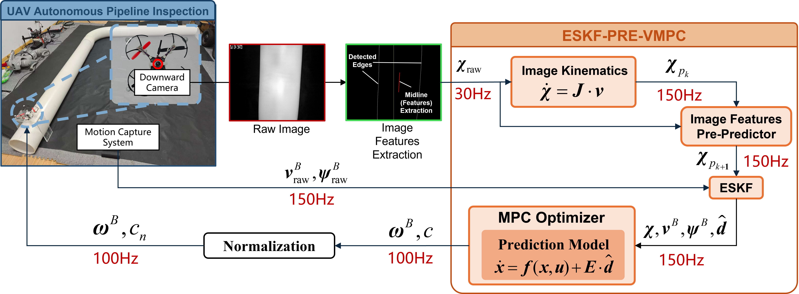
Control framework of the proposed ESKF-PRE-VMPC for UAV autonomous pipeline inspection. The framework integrates image feature extraction and prediction, state and lumped disturbance estimation, and model predictive control. A downward-facing camera captures pipeline images, from which the pipeline edges and the midline are extracted. To address the low sampling rate of visual measurements, an image feature predictor based on image kinematics operates at the quadrotor state measurement frequency (the frequency of the motion capture system in this work). The predicted features are fused with available measurements in the ESKF to enable robust high-frequency estimation, providing timely full-state information, including image features, quadrotor states, and lumped disturbances, for MPC.
SITL Simulation

Autonomous 3D UAV pipeline inspection in Gazebo simulation. Upper-left: visual detection results, where white lines indicate boundaries, red line indicates the detected midline, blue line indicates the predicted midline, and yellow line indicates the image centerline.
Simulation setup
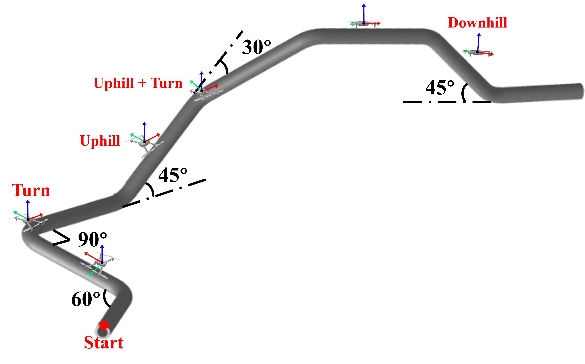
Left: an exemplary real-world oil and gas pipeline; Right: schematic of the 3D pipeline model used in Gazebo, showing the curvature and slope of each segment. The pipeline model is composed of eight segments as shown, each 8 meters long.
Results of Simulation
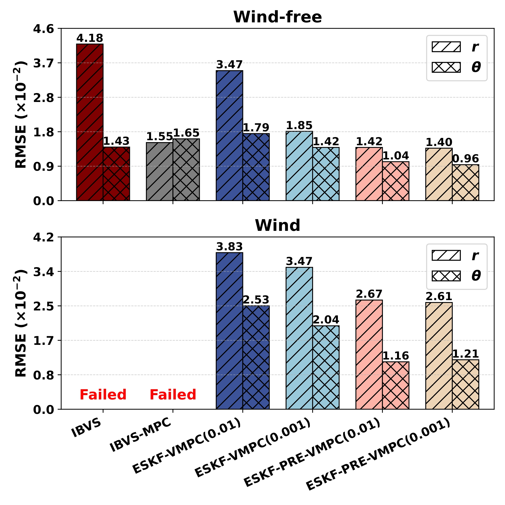
Image features RMSE (lower is better). The values in parentheses after methods indicate the variance of the added zero-mean Gaussian noise.

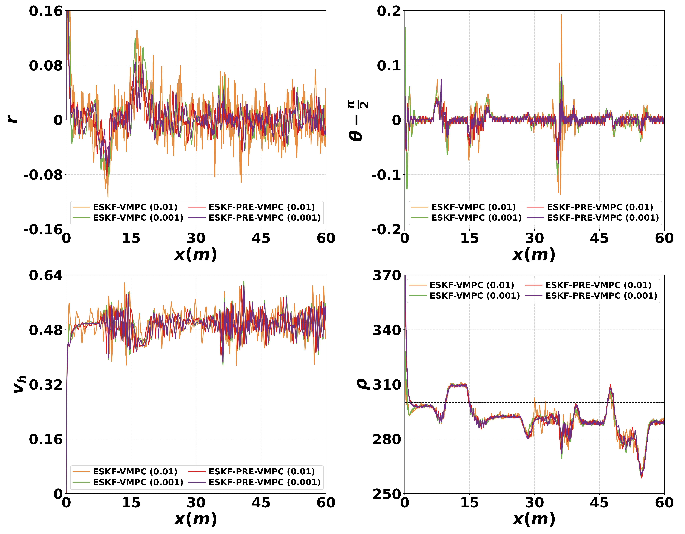
Comparative results of different methods. Left: without wind disturbance; Right: with wind disturbance.
Real-world Validation
Real-world experiments are further conducted on a nano quadrotor platform Crazyflie. Due to the limited payload capacity of the original Crazyflie platform, the propulsion system is modified to increase its payload capability. This enhancement enables the onboard integration of a lightweight camera and image transmission module, allowing fast indoor algorithm validation.
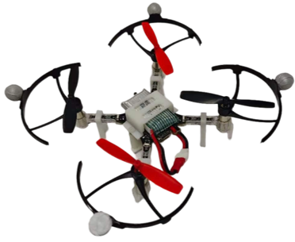
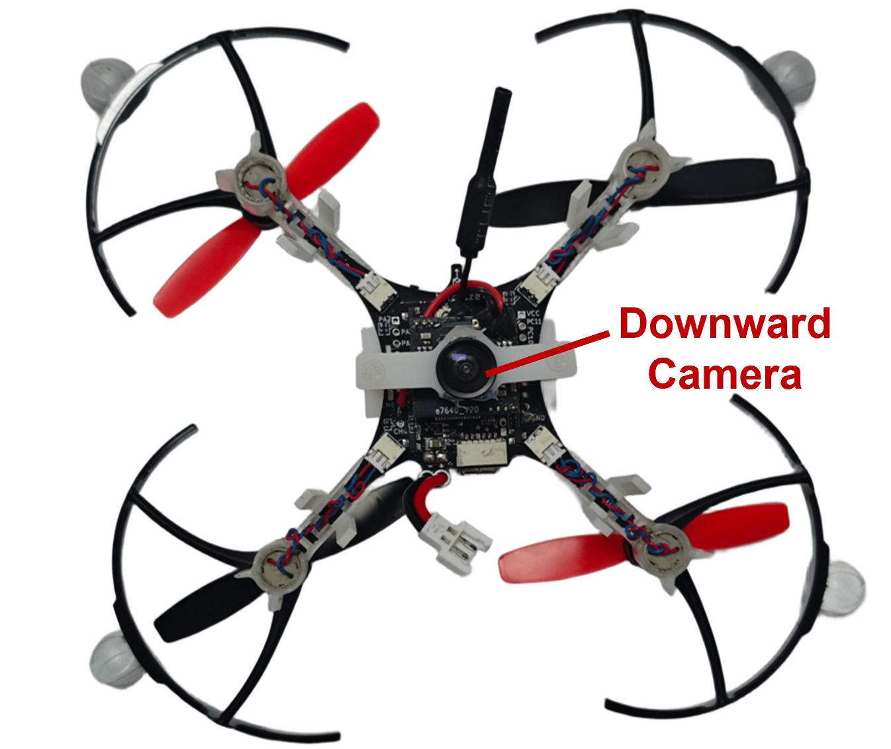
Modified Crazyflie platform with a downward camera with a resolution of 756x560. Left:side view; Right: bottom view.
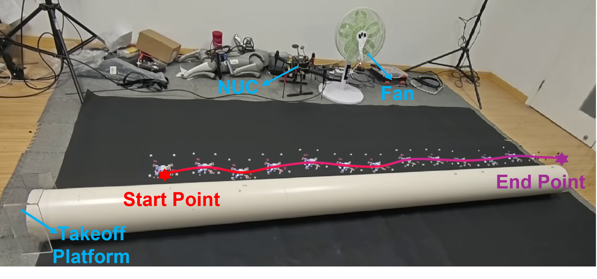
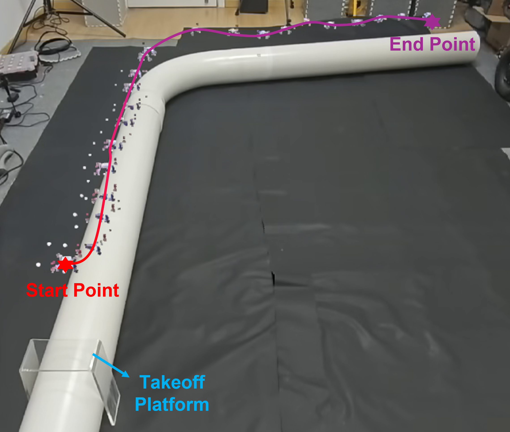
Top: Straight pipeline experiments with an effective inspection length of approximately 2.5 m; Bottom: Curved pipeline experiment with an effective inspection length of approximately 4 m.
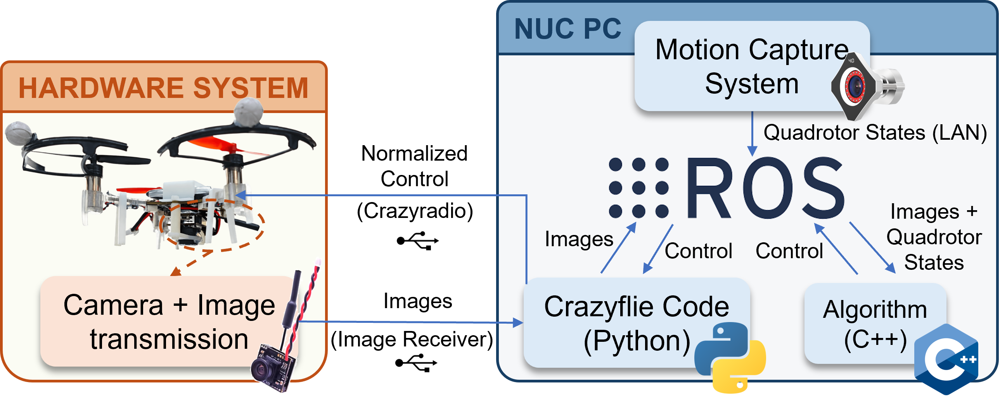
Hardware and communication architecture of the modified Crazyflie platform for real-world experiments.
Real-world Results
ESKF-VMPC
ESKF-PRE-VMPC
Real-world experimental results of straight pipeline inspection without wind disturbance.
ESKF-VMPC
ESKF-PRE-VMPC
Real-world experimental results of straight pipeline inspection with wind disturbance.
Real-world experimental results of curved pipeline inspection without wind disturbance.
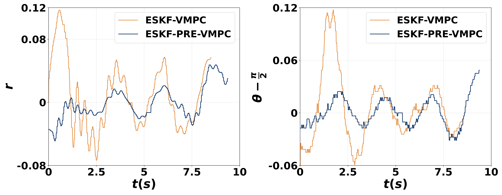
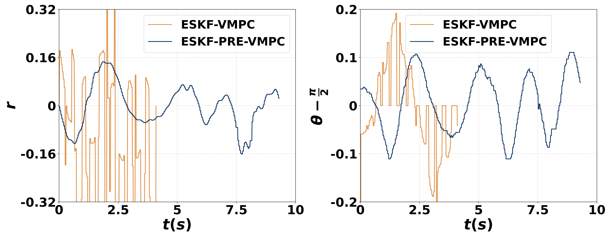